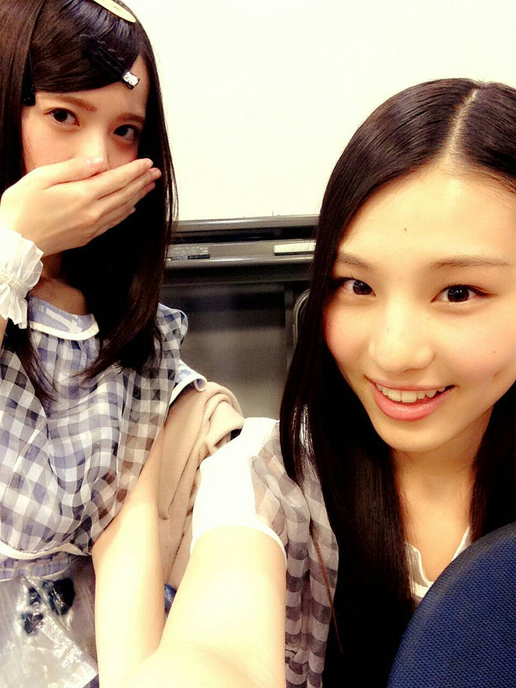
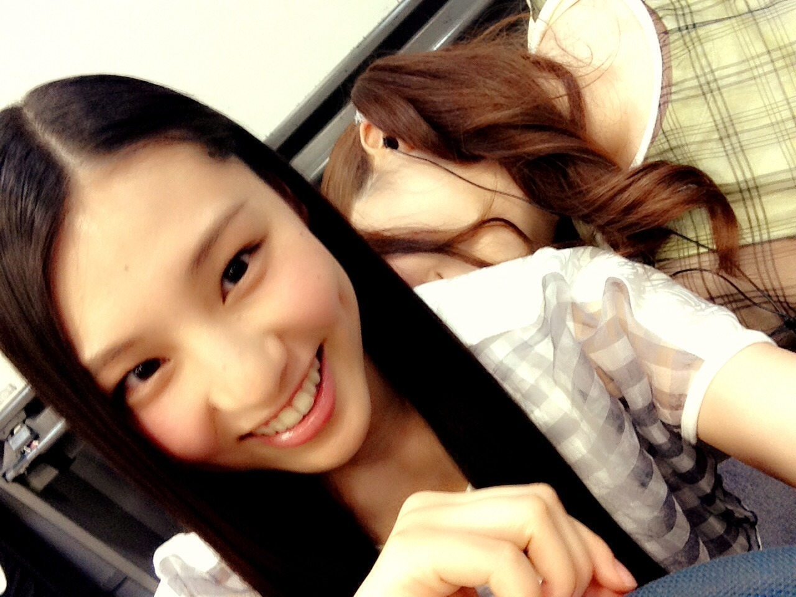
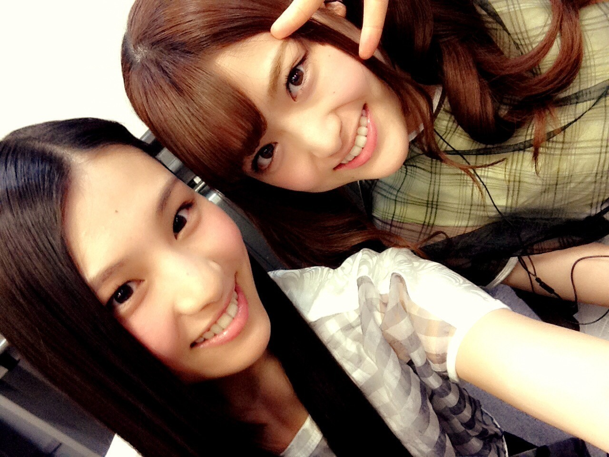
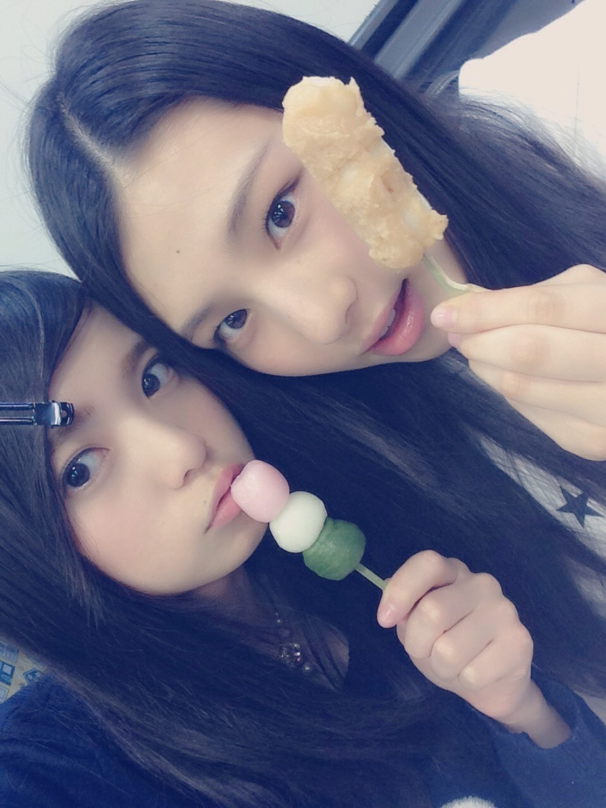

| 2015/03 18 Wed | いつもの３個セットを３個_( ．．*)vol.15 |
みなさんこんばんはー！
さがらいおりです！
アルバム特典のチェキ会
ポーズはファンの方に決めてもらって
椅子に座って
小さいテーブルを挟んでの撮影でした！
少しだけどお話もできたり
皆さんと一緒に写真が撮れて
嬉しかったなー(´,,•ω•,,)♡
撮影会の時はいおりだけだったし、、
来てくれた方は
大切に保管してください(っ `-´ c)‼
11 thキャンペーンで
東京メトロさん全面協力のもと
全駅にメンバー 一人ひとりのポスターを
貼らさせて頂いてます！
いおりは
東陽町駅 門前仲町駅 南砂町駅
(20 日から木場駅にも貼られます！)
ぜひ推しメンのポスターを
見つけてみてください♪♪

~いおり庵~
 握手会で顔と名前覚えるの早い？
握手会で顔と名前覚えるの早い？
顔はほぼ覚えてる！
名前はコメント書いてくれてたり
見た目と合ってたら覚えるけど
難しいニックネームとかだと
2 ~ 3 回聞いちゃうかも、、
いおりちゃんは赤色か青色だったらどっち？
いおりは赤！
女の子にあげたら喜ぶのって何かな？
やっぱクッキーとか♡？
いおりはチョコレートが大好き♡
いちごは練乳かける派？かけない派？
基本かけないけど
飽きたら少しつけて食べる♪♪
髪伸びた？
そーなの！
なんかこの前 10 cm切ったんだけど
もう伸びてる感じがする(´･ω･`)
気付いた方すごーい
3 / 18 11thシングル｢命は美しい｣
今日発売です！！
この日をとぉっても楽しみにしていました：）
この曲は
切ないけど力強くて
勇気が出る曲かなって思います！
4 月になって
環境が変わる方も多いと思うけど
この曲を聞いて
また頑張ろうって思ってもらえたら
嬉しいです♪♪
たっくさん聞いてください(∩´∀`∩)
まひろさんとのペアPVは
typeAに入ってます！！
初選抜曲でもあるので
たくさんの方に聞いてもらえたら
嬉しいです *˙︶˙*)ﾉ"
いおりもCDをもらって、
MV見たけど、映像が暗めで
カッコよかったです✩
｢立ち直り中｣のMVも見たら
感動して涙が出ました( ; ; )
あの歌すごい好きです！

はい！誰でしょうか？？
せいかーい！！
お見事ー！！！

松村さんでした♡
それとね、
昨日飛鳥ちゃんと未央奈と
映画館行って飛鳥ちゃんとアメリカン・スナイパー観たの！
未央奈だけ別の映画観てたんだけど、
隣のスクリーンだったよ、、(。-∀-)
行く途中にお団子買ったの♡
未央奈はイチゴ大福餅で
飛鳥ちゃんは三色団子で
いおりはきな粉あん
最近きな粉にハマってるの♡

美味しかったー♡！
3 / 19 OVERTURE
3 / 24 STREET JACK
3 / 24 Samurai ELO
是非見てください♪♪
i o r i .

コメント(266)
2015/03/18 16:24